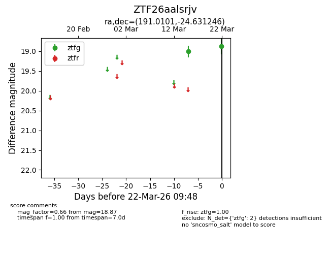
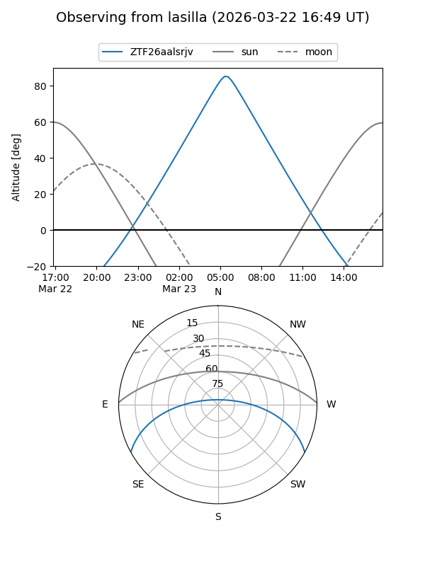
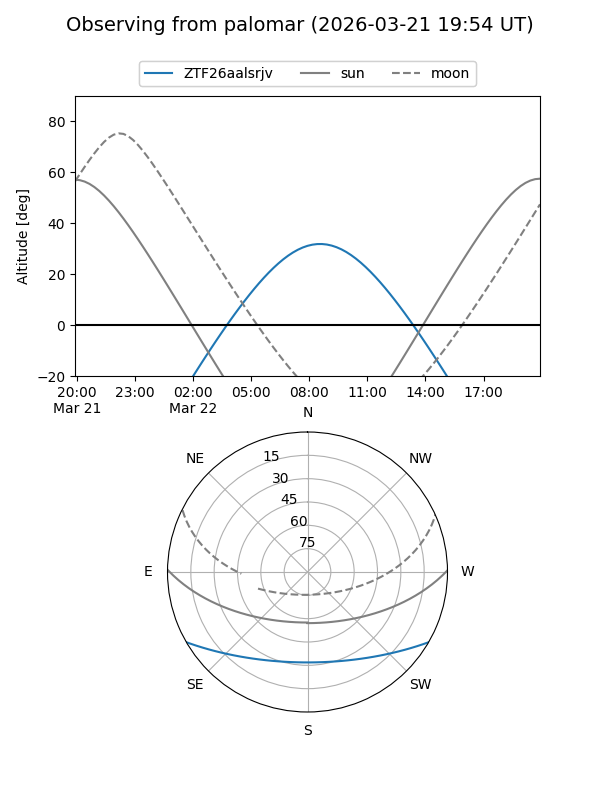

ZTF26aalsrjv
Target ZTF26aalsrjv at 2026-03-22 09:50
Aliases and brokers:
FINK: link
Lasair: link
ALeRCE: link
alt names
ZTF26aalsrjv (ztf,fink_ztf)
Coordinates:
equatorial (ra, dec) = 191.0101,-24.63125
equatorial (HMS+DMS) = 12:44:02.42,-24:37:52.49
galactic (l, b) = (300.7923,+38.20977)
Flags:
Photometry:
last ztfg=18.87
2 ztfg detections
Lightcurve

Visibility


Additional plots